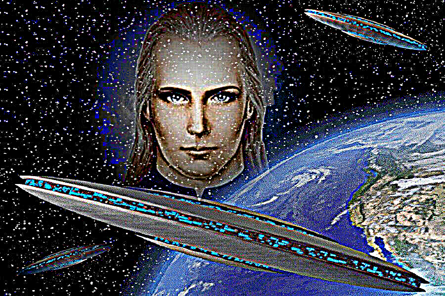
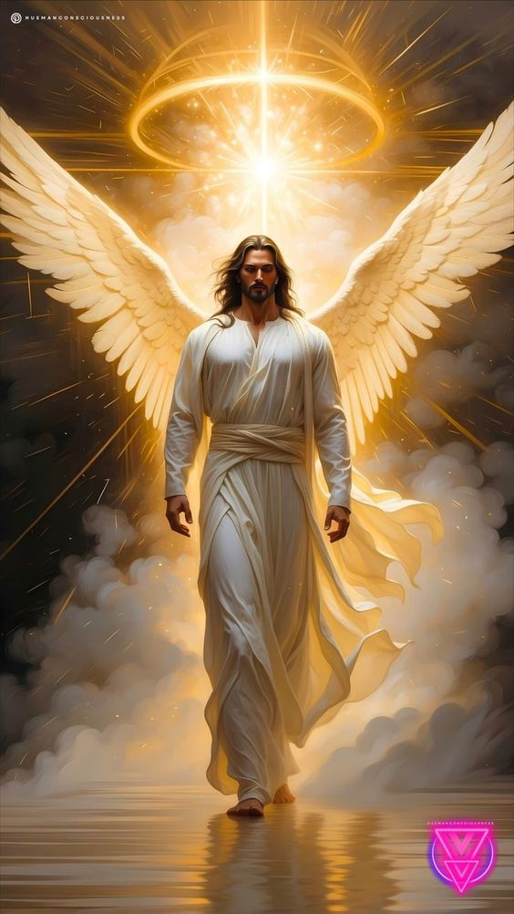

Это послание знаменует начало новой эры. Новый этап. Взглянуть на мир
по-другому — значит увидеть скрытое за масками и фасадами. Мир, каким
привыкли его видеть, давно служит лишь ширмой для тех, кто веками
управляет скрытыми механизмами.

Многим кажется, что этот порядок вещей вечен, что иллюзия безопасности и
стабильности — непоколебимая истина. Но новая эра уже здесь, она не
просто шанс — это неизбежность. Истина, что веками лежала в тени, всегда
была рядом. Взгляд за пределы дозволенного — это путь к пониманию, что
случайностей не бывает, а «незначительные» события переплетены сетью
влияния и контроля.

Мир словно покрыт слоем пыли, под которым древние силы скрывают свои
следы. Но время этих сил истекает. Становится всё очевиднее, что эпоха
перемен не просто близка — она уже здесь. Тот, кто раскроет глаза,
увидит знаки в самых обыденных вещах. Узнает, что грань между мифом и
реальностью стирается.
ЭТАП ЗАПУЩЕН
НОВАЯ ЭРА ГРЯДЁТ